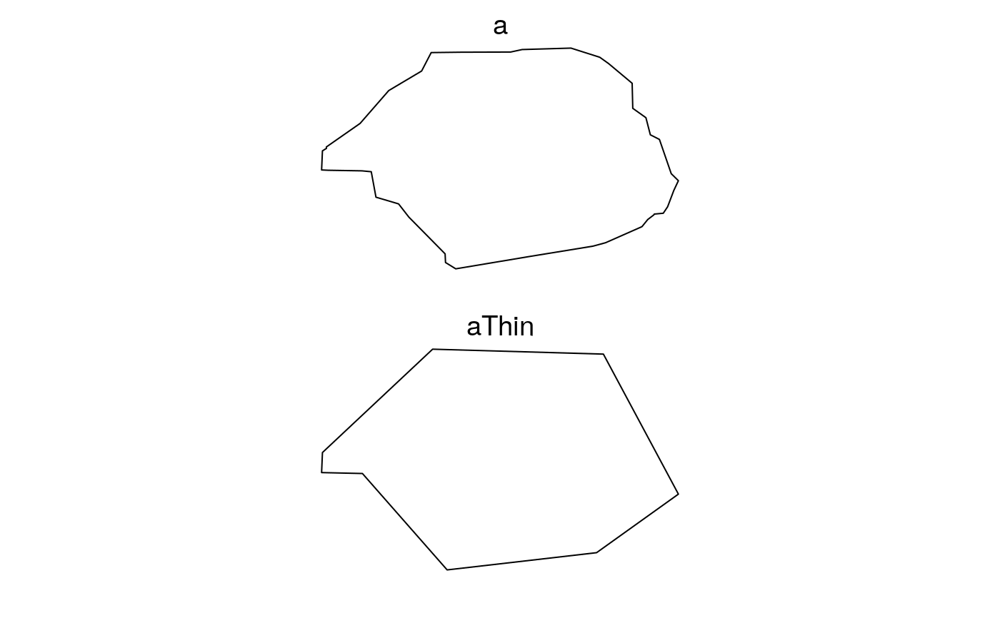

For visualizing, it is sometimes useful to remove points in Spatial* objects.
This will change the geometry, so it is not recommended for computation.
This is similar to rgeos::gSimplify and sf::st_simplify,
but faster than both (see examples) for large shapefiles, particularly if
returnDataFrame is TRUE.
thin will not attempt to preserve topology.
It is strictly for making smaller polygons for the purpose (likely)
of visualizing more quickly.
thin(x, tolerance, returnDataFrame, minCoordsToThin, ...) # S3 method for SpatialPolygons thin(x, tolerance = NULL, returnDataFrame = FALSE, minCoordsToThin = 0, maxNumPolygons = getOption("quickPlot.maxNumPolygons", 3000), ...) # S3 method for default thin(x, tolerance, returnDataFrame, minCoordsToThin, ...)
| x | A Spatial* object |
|---|---|
| tolerance | Maximum allowable distance for a point to be removed. |
| returnDataFrame | If |
| minCoordsToThin | If the number of coordinates is smaller than this number, then thin will just pass through, though it will take the time required to calculate how many points there are (which is not NROW(coordinates(x)) for a SpatialPolygon) |
| ... | Passed to methods (e.g., |
| maxNumPolygons | For speed, |
library(raster) b <- SpatialPoints(cbind(-110, 59, 1000)) crs(b) <- sp::CRS("+init=epsg:4326") crsObj <- CRS(paste0("+proj=tmerc +lat_0=0 +lon_0=-115 +k=0.9992 +x_0=500000 +y_0=0 ", "+datum=NAD83 +units=m +no_defs +ellps=GRS80 +towgs84=0,0,0")) # make a random polygon -- code adapted from SpaDES.tools::randomPolygon package: areaM2 <- 1000 * 1e4 * 1.304 # rescale so mean area is close to hectares b <- spTransform(b, crsObj) radius <- sqrt(areaM2 / pi) meanX <- mean(coordinates(b)[, 1]) - radius meanY <- mean(coordinates(b)[, 2]) - radius minX <- meanX - radius maxX <- meanX + radius minY <- meanY - radius maxY <- meanY + radius # Add random noise to polygon xAdd <- round(runif(1, radius * 0.8, radius * 1.2)) yAdd <- round(runif(1, radius * 0.8, radius * 1.2)) nPoints <- 20 betaPar <- 0.6 X <- c(jitter(sort(rbeta(nPoints, betaPar, betaPar) * (maxX - minX) + minX)), jitter(sort(rbeta(nPoints, betaPar, betaPar) * (maxX - minX) + minX, decreasing = TRUE))) Y <- c(jitter(sort(rbeta(nPoints / 2, betaPar, betaPar) * (maxY - meanY) + meanY)), jitter(sort(rbeta(nPoints, betaPar, betaPar) * (maxY - minY) + minY, decreasing = TRUE)), jitter(sort(rbeta(nPoints / 2, betaPar, betaPar) * (meanY - minY) + minY))) Sr1 <- Polygon(cbind(X + xAdd, Y + yAdd)) Srs1 <- Polygons(list(Sr1), "s1") a <- SpatialPolygons(list(Srs1), 1L) crs(a) <- crsObj # end of making random polygon clearPlot()Plot(a)NROW(a@polygons[[1]]@Polygons[[1]]@coords)#> [1] 41if (require(fastshp)) { aThin <- quickPlot::thin(a, 200) NROW(aThin@polygons[[1]]@Polygons[[1]]@coords) # fewer Plot(aThin) # looks similar }#>#> #>#> #> #>#># compare -- if you have rgeos # if (require("rgeos")) { # aSimplify <- gSimplify(a, tol = 200) # NROW(aSimplify@polygons[[1]]@Polygons[[1]]@coords) # fewer # Plot(aSimplify) # } # compare -- if you have sf # if (require("sf")) { # aSF <- st_simplify(st_as_sf(a), dTolerance = 200) # # convert to Spatial to see how many coordinates # aSF2 <- as(aSF, "Spatial") # NROW(aSF2@polygons[[1]]@Polygons[[1]]@coords) # fewer # Plot(aSF) # } # thin is faster than rgeos::gSimplify and sf::st_simplify on large shapefiles# NOT RUN { # this involves downloading a 9 MB file setwd(tempdir()) albertaEcozoneFiles <- c("Natural_Regions_Subregions_of_Alberta.dbf", "Natural_Regions_Subregions_of_Alberta.lyr", "Natural_Regions_Subregions_of_Alberta.prj", "Natural_Regions_Subregions_of_Alberta.shp.xml", "Natural_Regions_Subregions_of_Alberta.shx", "natural_regions_subregions_of_alberta.zip", "nsr2005_final_letter.jpg", "nsr2005_final_letter.pdf") albertaEcozoneURL <- paste0("https://www.albertaparks.ca/media/429607/", "natural_regions_subregions_of_alberta.zip") albertaEcozoneFilename <- "Natural_Regions_Subregions_of_Alberta.shp" zipFilename <- basename(albertaEcozoneURL) download.file(albertaEcozoneURL, destfile = zipFilename) unzip(zipFilename, junkpaths = TRUE) a <- raster::shapefile(albertaEcozoneFilename) # compare -- if you have rgeos and sf package # if (require("sf")) { # aSF <- st_as_sf(a) # } # if (require("rgeos") && require("sf")) { # thin at 10m microbenchmark::microbenchmark(times = 20 , thin(a, 10), , thin(a, 10, returnDataFrame = TRUE) # much faster # , gSimplify(a, 10), # , st_simplify(aSF, dTolerance = 10)) ) # Unit: milliseconds # expr min median max neval cld # thin(a, 10) 989.812 1266.393 1479.879 6 a # gSimplify(a, 10 ) 4020.349 4211.414 8881.535 6 b # st_simplify(aSF, dTolerance = 10) 4087.343 4344.936 4910.299 6 b #} # }